For practical reasons, the procedure to set up the experiment will
follow the flight path of the X-rays, which means from upstream to
downstream. The first thing is to choose the right beam line with
proper X-ray characteristics for your specific experiment.
Experimental setup in the early stages is similar to our conventional
PDF X-ray experiments. The schematic diagram of the RA-PDF
experimental setup is shown in Fig. A.1.
Figure A.1:
Schematic diagram of the rapid acquisition PDF
(RA-PDF) experiment layout.
|
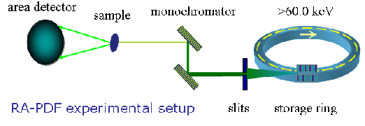
|
- Set the energy. This step doesn't need to be the first, and
commonly it's necessary to change the X-ray energy during the
experiment. Nonetheless, a few ways to calibrate the energy are
briefly explained here. In principle, we can compute the X-ray
energy given the monochromator tilting angle and the reflection
plane used. However, those calculated values are usually only good
approximations due to the various uncertainties in the tilting
angle, etc.. One commonly used approach is to scan across the
absorption edge of a standard material, such as Pb, or Au K edges,
and use their well known absorption edge energy values as
references. The other way is to use multiple channel analyzer (MCA)
to locate the incident beam energy. One complication of this method
is the MCA needs to be calibrated first, usually with a set of
standard radiative materials which have characteristic emission
lines. A common step after this is to align the center of the slits
so that the incident beam passes through the centers. This can be
done automatically by monitoring the downstream beam intensities
when moving the slits.
- Set the slit openings to give you the proper beam size. We
have used 0.5×0.5 mm at both 1ID-D and 6ID-D at APS. The
primary considerations for beam size are usually the Q space
resolution and incident X-ray flux. With some approximations,
starting from
Q =
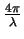
sin , the resolution function can be expressed as,
, the resolution function can be expressed as,
|
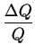 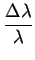 + 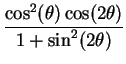 ×(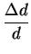 + 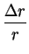 )
|
(A.1) |
where d is the sample to detector distance, r is the distance
of the pixel from the center of the image plate. In our typical
RA-PDF experiments, the maximum 2 angle is about 30.0
degrees. We can show that the first term
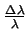
is the smallest, usually in the
order of 10-4 determined by the characteristics of the
monochromator(s). The prefactor of the Q dependent second term
varies from 1.0 to 0.65 as 2 goes from 0.0 to 30.0 degrees.
The typical value of
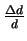
is
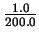
= 0.005 with 1 mm thick sample and 200 mm sample
to detector distance.  r can be estimated as the sum of
beam dimension and image plate pixel size (0.1×0.1 mm),
while r value ranges from 0.0 to 172.5 mm. If we simply take
100.0 mm as the mean value of r, the
r can be estimated as the sum of
beam dimension and image plate pixel size (0.1×0.1 mm),
while r value ranges from 0.0 to 172.5 mm. If we simply take
100.0 mm as the mean value of r, the
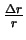
becomes comparable to
with beam dimension of
0.5×0.5 mm. A much larger beam size than this would make it
the limiting factor to the instrument resolution. There are also
some other considerations as well, such as the intrinsic beam
size, the incident beam intensity, scattering powder of the sample
and so on. Around 0.5×0.5 mm beam size is used in our
RA-PDF experiments.
- Align the center of the diffractometer with the beam
center. This involves two steps. We first locate the center of
rotation of the diffractometer usually with help from a
telescope. A sharp metal pin is mounted on the goniometer, and the
goal is to get the tip of the pin in the same place when any circle
of the diffractometer is rotated. Once you have done this, use the
motor to adjust position of the diffractometer to set the tip of
the pin on the beam center. You can use a monitor or burn paper or
fluorescent screen to do it. The easiest way is to place a Silicon
diode detector after the pin and do x-y scanning of the
diffractometer. Once this is done, remember the current position of
the pin tip in the telescope, or move the telescope so that the pin
tip sits in an easy to remember position, e.g. the center
cross. This is the beam center and the center of the diffractometer
after the alignment.
- Put the image plate detector to its approximate position. You
will need to adjust it later. In most cases, the only variable here
is the sample to detector distance. As the dimension of the image
plate (e.g. 345 mm in diameter for Mar345 detector) is fixed,
given the energy you will be working at, you can compute the
necessary maximum 2, and then the sample to detector distance
d (mm) = 172.5/tan(2). For example, if you want to achieve
Qmax of 35.0 Å-1 at 100 keV with the Mar345 detector, the
sample to detector distance needs to be 202.5 mm.
- Install the beam stop and align it. Before you open the beam
shutter, make sure to have Pb shielding right in the front of the
image plate detector. Direct beam WILL damage the IP permanently!
The best way is to put a Silicon diode monitor after the beam stop
installed on a translation stage. Through scanning the beam stop
positions, you can quickly position the beam stop to fully
intercept the incident beam.
- Align the image plate detector within a reasonable amount of
time. One goal is to set the beam center close to the detector
center. The other is to achieve a good orthogonality of the plate
plane to the beam direction. This requires the use of a calibrant,
for example, fine Si powder. Program FIT2D [64]
provides an easy-to-use interface to do this job. One important
consideration for this purpose is to minimize the uncertainties in
later corrections. For example, the oblique incident angle
dependence correction assumes that the same Q values around the
ring have the same incident angle to the IP.
- Take efforts to reduce the background. The RA-PDF experiment
subjects to rather high background levels. Most background
intensities come from air scattering. Thus the first step here is
to shield out the air scattering before the sample by placing a
thick Pb plate with a hole at the center for the incident beam. If
there is a considerable gap between the Pb shield and the sample, a
collimator right in front of the sample is preferred. During
experiments, usually more than 50% incident beam is allowed to
pass through the sample. The rather long sample to beam stop
distance (
 150 mm) creates a significant amount of air
scattering. The collimation after the sample is in principle hard
to implement. One way is to shorten the sample to beam stop
distance, however, this would increase the blocked scattering angle
by the beam stop. A very effective way would be to use an evacuated
second flight path, however, more difficult in practice. The
background scattering in practice only becomes an issue for weakly
scattering samples.
150 mm) creates a significant amount of air
scattering. The collimation after the sample is in principle hard
to implement. One way is to shorten the sample to beam stop
distance, however, this would increase the blocked scattering angle
by the beam stop. A very effective way would be to use an evacuated
second flight path, however, more difficult in practice. The
background scattering in practice only becomes an issue for weakly
scattering samples.
- Install additional equipment required for your
experiment. For example, the displex with cryostat needs to be set
up for low temperature measurements. In the case of high
temperature measurements, the furnace should be installed.
Once you are satisfied with the position and tilt of the image plate,
write down the values you get, such as the sample to detector
distance, beam center, tilt angle, etc. We are ready now to do some
real measurements on samples.
Xiangyun Qiu
2005-02-18